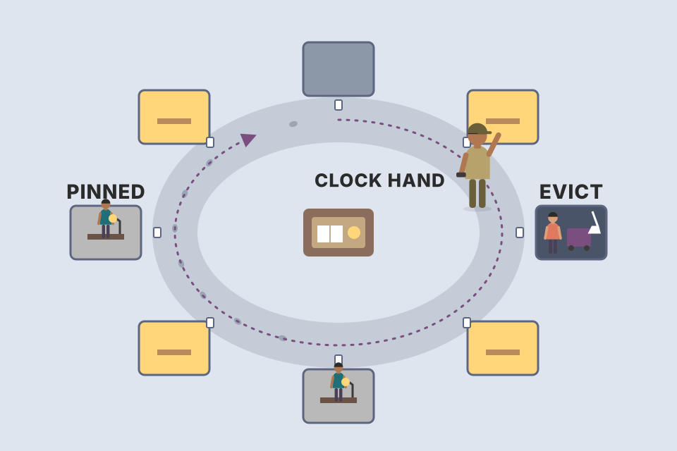
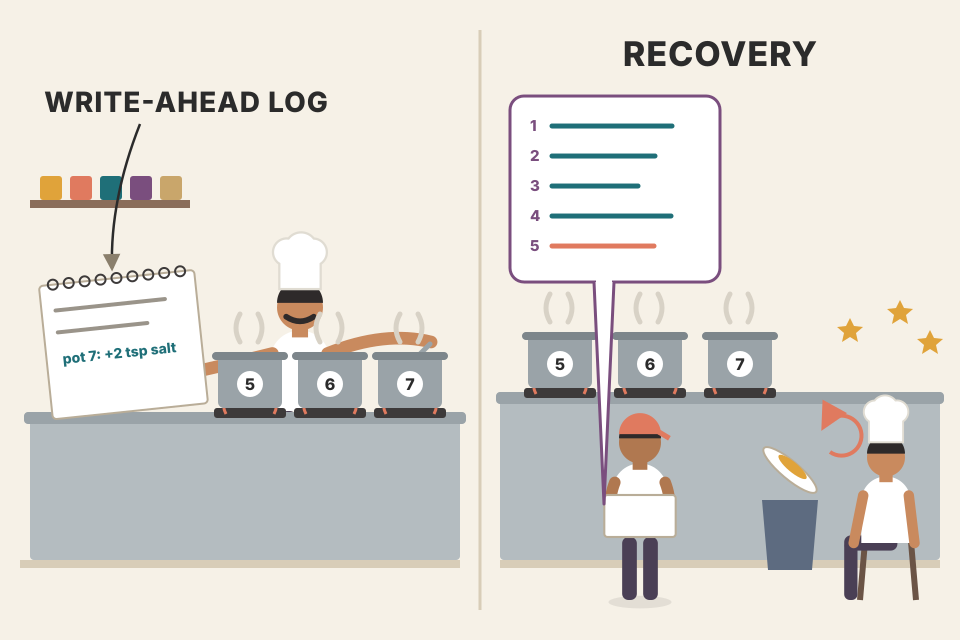
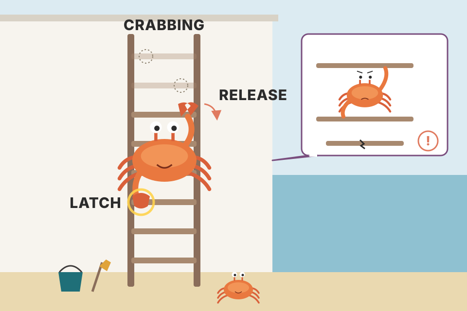

The page cache, the write-ahead log, crash recovery (ARIES), isolation levels and anomalies, optimistic, multiversion and lock-based concurrency control, deadlocks, latches, latch crabbing and Blink-trees. Everything from the chapter in plain words and in the book's order, with a step-through or a simulator for each mechanism. Workloads (page-access traces, lock requests) are simulated; numbers they produce are modelled, not measured on a real database. Anything that comes from outside the book sits in a dashed "Beyond the book" box or is marked "(not in the book)".
Chapters 1–4 built the storage structures (pages, B-trees). This chapter climbs one level up to the parts that make a transaction safe: keep hot pages in memory, never lose a committed change, and let many transactions run at once without seeing each other's half-done work. The four parts below map one-to-one to the four components Petrov lists at the start.
A transaction is one indivisible logical unit of work: several reads and writes of records that the database treats as a single step. It must keep four properties, together called ACID (the term is from Haerder and Reuter, 1983):
On one node, four components cooperate to do this:
Transactions that span several partitions or machines need extra coordination; the book leaves them to Chapter 13 (Distributed Transactions, pdf p403).
A bank branch. The transaction manager is the floor manager who keeps a list of open customer requests. The lock manager hands out keys to safe-deposit boxes: anyone may look (shared), only one may change the contents (exclusive). The page cache is the counter where ledgers are pulled out of the vault and edited. The log manager is the carbon-copy receipt book: every edit is written there first, so if the lights go out mid-edit, the ledgers can be rebuilt from the receipts.
Each letter of ACID is paid for by a component. A and D come from the log manager plus the page cache (log first, then change the page; replay or undo after a crash, sections 10–14). I comes from the lock manager and transaction manager (sections 15–22). C is mostly your application's job: the database can enforce declared constraints, but only you know that "the sum of two accounts must not go negative" (that exact case breaks under snapshot isolation in section 17).
Most databases have a two-level memory hierarchy: slow persistent storage (disk) and fast main memory (RAM). To touch the disk less, pages are cached in memory; when the storage layer asks for a page again, it gets the cached copy. Reusing cached pages is safe as long as no other process changed the file on disk. The book notes this approach is sometimes called a virtual disk, citing Bayer and McCreight [BAYER72]: a read hits physical storage only when memory has no copy. Today it's called the page cache or buffer pool. Petrov prefers "page cache": "buffer pool" suggests pooling and reusing empty buffers without sharing their contents, which is a useful part of a page cache (or a separate component) but not its whole job. A crash or unclean shutdown loses everything in the cache.
Operating systems have a page cache too: they use spare memory to cache disk contents transparently and speed up I/O system calls.
Vocabulary: loading an uncached page from disk is paging in. A cached page with changes not yet on disk is dirty until it is flushed. The cache is much smaller than the dataset, so it fills up, and paging in a new page means evicting another. Pages land in whatever slot is free, so the order in memory has nothing to do with the order on disk (Figure 5-1, recreated below).
The page cache's main jobs:
A desk (RAM) next to a filing cabinet (disk). You can only fit four folders on the desk. You work on the desk copy; the cabinet copy goes stale until you file the folder back. When the desk is full, some folder must go back in the cabinet, and if you scribbled on it, you must file the new version before it leaves the desk.
The cache is a hash map from page id to slot, plus a little metadata per slot (dirty flag, pin/reference count, data for the eviction policy). A miss costs a disk read; an eviction of a dirty page also costs a disk write. So a cache turns many small random disk writes to the same page into one write at eviction or checkpoint time ("buffered together"). Watch the readout: writes to an already-dirty page cost nothing extra.
From the book (sidebar, pdf p146): many databases open files with O_DIRECT, so I/O system calls skip the kernel page cache and the database runs its own buffer management. OS developers often dislike it; Linus Torvalds criticised O_DIRECT because it isn't asynchronous and gives no readahead or way to describe access patterns to the kernel. Until the OS offers something better, it stays useful. fadvise lets you ask the kernel to treat pages a certain way, with no guarantee. Memory mapping avoids system calls for I/O, but then you lose control over caching.
Not in the book: without O_DIRECT a page can be cached twice (once by the database, once by the kernel). PostgreSQL historically relies on the kernel cache under its own shared_buffers (double buffering), while InnoDB commonly uses innodb_flush_method=O_DIRECT. Treat these as typical configurations, not universal rules.
Notes/syllabus.html lists "LRU Cache" in the DSA table as the cache you'll build in every layer; the page cache is the original one.Changes stay in memory until they are eventually written back. No other process may change the backing file, so syncing is one-way: memory → disk, never the reverse. The page cache is the database's own version of the kernel page cache: it talks to the block device directly, does similar work, and decouples logical writes (changing a page) from physical ones (writing it to disk).
Caching keeps part of the tree in memory without changing the B-tree algorithm and without turning pages into in-memory objects: just replace every disk access with a call to the page cache. On a request: if the page is cached, return it. If not, translate the logical page address (page number) to its physical address, load it, and return the cached copy. A returned buffer is referenced; the engine must hand it back (dereference) when done. The cache can be told not to evict a page by pinning it. A modified page (say a cell was appended) gets a dirty flag: out of sync with disk, must be flushed for durability.
interface Frame { pageId: number; data: Uint8Array; dirty: boolean; refCount: number; pinned: boolean }
class PageCache {
private table = new Map<number, Frame>(); // logical page id -> frame
constructor(private capacity: number, private disk: Disk, private policy: EvictionPolicy) {}
get(pageId: number): Frame { // "request" a page
let f = this.table.get(pageId);
if (!f) { // miss: page it in
if (this.table.size >= this.capacity) this.evictOne();
f = { pageId, data: this.disk.read(this.disk.physicalAddress(pageId)), dirty: false, refCount: 0, pinned: false };
this.table.set(pageId, f);
}
f.refCount++; // now "referenced"
this.policy.touch(pageId);
return f;
}
release(f: Frame) { f.refCount--; } // "dereference"
markDirty(f: Frame) { f.dirty = true; }
pin(f: Frame) { f.pinned = true; }
private evictOne() {
const victim = this.policy.pickVictim(id => { // policy skips frames it may not evict
const f = this.table.get(id)!; return f.refCount === 0 && !f.pinned;
});
const f = this.table.get(victim)!;
if (f.dirty) this.disk.write(f.pageId, f.data); // WAL rule: log must already be forced (section 10)
this.table.delete(victim);
}
}A library reading room. A book on a reader's desk is referenced: staff won't reshelve it. A book on the reserve shelf is pinned: kept out even when nobody is reading it. A book with pencil notes is dirty: before it goes back to the stacks, the notes must be copied into the master copy.
Two counters guard eviction: the reference count says "someone is using this right now" (a correctness rule: evicting it would pull memory out from under a thread), and the pin says "keep this for a while" (a performance hint, section 05). The dirty flag is a durability rule. Because the file has exactly one writer (the database), the cache never has to check whether disk changed underneath it, which is why the sync is one-way.
A full cache serves more reads from memory and lets more writes to the same page be combined. But capacity is limited, so old pages must be evicted. The rules:
Flushing on every eviction can hurt performance, so some databases run a background process that cycles through dirty pages likely to be evicted soon and writes them out ahead of time. PostgreSQL's background writer does exactly this.
Durability adds another constraint: if the database crashes, everything not flushed is lost. Flushes are coordinated by the checkpoint process, which keeps the write-ahead log and the page cache in lockstep: only log records for operations whose pages have been flushed may be discarded from the WAL, and dirty pages can't be evicted until this process completes.
So there is always a trade-off between five goals. The book's techniques improve the first three while staying inside the last two:
A 100-slot cache with CLOCK eviction (section 08) serves 20,000 requests over 1,000 pages with a skewed (Zipf-like) popularity; the chosen share of requests modify the page. Every 10 requests a background writer looks ahead of the clock hand and cleans up to k dirty pages that look like the next victims. X-axis: k. "Stalled evictions" = the victim was still dirty, so the request waited for a write. "Page writes" = all writes from evictions plus background cleaning, per 1,000 requests. Pooled over 3 seeded traces. Simulated, not measured.
Goals 1 and 2 pull in opposite directions, and the chart shows both. As k rises, almost no eviction has to wait for a write (goal 2 met), but the total number of writes rises, because some pages that were cleaned early get dirtied again before they're evicted and must be written twice (goal 1 lost). Turn the write share up and the gap widens. Real systems tune exactly this knob (PostgreSQL: bgwriter_lru_maxpages, bgwriter_delay, not in the book).
The PostgreSQL buffer-manager README says the background writer is meant to write out pages that are likely to be recycled soon: it scans ahead of the clock hand (nextVictimBuffer) for buffers that are dirty, unpinned and have zero usage count, and writes them. Source: src/backend/storage/buffer/README.
Disk I/O on every read or write is impractical: later reads often want the same page, and later writes often change the same page. A B-tree narrows toward the top, so nodes near the root are hit by most reads, and splits and merges eventually reach them too. Some part of the tree always benefits a lot from caching.
We can "lock" in cache the pages likely to be used soon. This is pinning: pinned pages stay in memory longer, which cuts disk accesses [GRAEFE11]. Each lower level has exponentially more nodes than the one above, so the upper levels are a small fraction of the tree and can stay in memory permanently while the rest is paged in on demand. A query then doesn't make h disk accesses (h = tree height, Ch.2), only one per uncached lower level.
Structural changes on a subtree can cancel each other out: deletes causing merges, then inserts causing splits, or the reverse; likewise changes rising from different subtrees close together in time. Applying them only in memory buffers them, so one disk write replaces several and the cost is amortised.
8 KB page, 24-byte entries, 70% full → about 238 entries per node. 109 keys → 4.2 million leaves, about 17,650 level-2 nodes, 75 level-1 nodes and one root: height 4. Pinning the root and level 1 costs 76 pages (0.6 MB) and saves 2 of the 4 reads. Pinning level 2 as well costs about 145 MB and leaves one disk read per lookup. Every extra level saves one read but costs about 238× more memory than the one above it. That's the exponential the book is pointing at.
A city map book. The country overview page and the regional pages get opened for every single trip, so you keep them torn out and taped to the dashboard. Street-level pages you fetch from the glovebox only when you need that street.
Memory per level grows by the fan-out f; disk reads saved per level is always exactly 1. So the "price per saved read" jumps by ×f at each level, and there's a sharp knee: the top h − 1 levels are usually under 1% of the tree (≈ 1/f), and caching them leaves one read per lookup, the leaf. This is why "the index fits in memory" usually means "the internal nodes fit".
The cache also gives the engine fine control over prefetching (load pages before they are asked for: during a range scan, preload the next leaves) and eviction (a page loaded by a maintenance process can be evicted the moment it's done, since in-flight queries are unlikely to need it). PostgreSQL, for example, uses a circular buffer (a FIFO replacement policy) for large sequential scans.
A 150-slot LRU cache; queries hit a hot set of 120 pages (skewed); every 2,000 requests a big sequential scan reads the chosen number of cold pages once. Version A sends scan pages through the main LRU. Version B gives the scan its own small ring of 4 slots (FIFO) so scan pages never displace hot ones. Hot-page hit rate after each scan is shown, pooled over 3 seeds.
PostgreSQL's buffer README: sequential scans of large tables use a 256 KB ring; VACUUM's ring size is set by vacuum_buffer_usage_limit; bulk writes (COPY, CREATE TABLE AS) use a 16 MB ring, but not more than 1/8 of shared_buffers. Pages touched once by a big scan recycle within the ring instead of flushing the hot set. Source: buffer/README. InnoDB solves the same problem differently, with midpoint insertion (section 07).
When the cache is full, an old page must go. Evict the wrong one and you may load it again and again, when you could have kept it all along. So the cache needs an eviction policy (also called a page-replacement policy) that guesses which pages are least likely to be accessed again soon. A performant cache needs an efficient one.
The ideal strategy needs a crystal ball: know the future order of accesses and evict the page that won't be touched for the longest time. Real requests don't follow a fixed pattern, so exact prediction is hard, but a good strategy still cuts evictions.
A bigger cache sounds like a fix, but it isn't always one. Bélády's anomaly [BEDALY69] shows that adding pages can increase evictions when the replacement algorithm isn't optimal: pages needed soon get evicted and reloaded, and pages start competing for space. So the algorithm must be chosen with care.
Requests 1 2 3 4 1 2 5 1 2 3 4 5. FIFO with 3 slots: 9 misses. FIFO with 4 slots: 10 misses. One more slot, one more miss. Set the slider to 3 then 4 with FIFO and step through the table: with 4 slots, page 5 arrives and pushes out page 1 just before 1 is needed; with 3 slots the eviction order happened to line up better. LRU and OPT never do this: their curves only go down.
LRU and OPT are stack algorithms (not in the book): the set of pages kept with k slots is always a subset of the set kept with k + 1 slots, so a bigger cache can never miss where a smaller one hit. FIFO lacks this inclusion property, because when a page arrived, not how it's used, decides its fate; a different cache size shifts arrival order and so the victims. That's the precise reason behind the book's "if the algorithm is not optimal".
FIFO (first in, first out) is the most naïve policy: a queue of page ids in insertion order; new pages go to the tail; when full, evict the head, the page paged in longest ago. It only tracks page-in events, not later accesses, which makes it impractical for most real systems. Example: the root and top-level pages are paged in first, so FIFO evicts them first, though the tree structure makes it obvious they'll be needed again soon, if not immediately.
LRU (least recently used) [TANENBAUM14] extends FIFO: still a queue of eviction candidates, but a repeat access moves the page back to the tail, as if it were just paged in. The catch: updating references and relinking queue nodes on every access gets expensive under concurrency.
Other LRU-based strategies: 2Q (Two-Queue LRU) [JONSON94] keeps two queues: pages enter the first on initial access and move to a second, hot queue on later accesses, which separates recently used pages from frequently used ones. LRU-K [ONEIL93] tracks each page's last K accesses and uses them to estimate access times per page, so it spots frequently referenced pages.
Each workload is a seeded trace of 8,000 page requests; hit rates are averaged over 3 seeds (change the seed with the button at the top). Cache sizes double from 8 to 512 pages (log scale). Policies are my own small implementations: FIFO, LRU, CLOCK (section 08), a simplified 2Q (25% first-access FIFO, 75% hot LRU, no ghost list), LRU-2 (evict the page whose 2nd-most-recent access is oldest), TinyLFU-style admission in front of LRU (section 09, counts halved periodically), and OPT (Bélády's crystal ball, the upper bound). Simulated traces, not production traces.
The MySQL manual: InnoDB splits its LRU list into a "new" and an "old" sublist, with 3/8 of the buffer pool devoted to the old sublist. A newly read page is inserted at the midpoint (head of the old sublist), and moves to the head of the new sublist only when accessed again. A big scan therefore churns the old sublist and leaves the hot pages alone. Source: MySQL 8.0 Reference Manual, Buffer Pool.
class LRU {
private m = new Map<number, true>(); // JS Map keeps insertion order = recency order
constructor(private cap: number) {}
access(page: number): boolean { // returns true on hit
if (this.m.has(page)) { this.m.delete(page); this.m.set(page, true); return true; } // relink to tail
if (this.m.size >= this.cap) this.m.delete(this.m.keys().next().value); // evict head
this.m.set(page, true); return false;
}
}
// FIFO = the same code without the delete+set on a hit. That one line is the whole difference,
// and it's also the cost the book warns about: every hit mutates a shared list (needs a latch).Sometimes efficiency matters more than precision. CLOCK variants are compact, cache-friendly, concurrent alternatives to LRU [SOUNDARARARJAN06]; Linux uses a CLOCK variant. CLOCK-sweep keeps page references and an access bit per page in a circular buffer (some variants use counters instead of bits to account for frequency). Each access sets the page's bit to 1. To find a victim, the clock hand goes round the buffer:
The bit of a page in use is assumed never to be 0, so a referenced page can't be evicted; referenced pages are less likely to be replaced. A big plus of the circular buffer: both the hand pointer and the contents can be updated with compare-and-swap, with no extra locking. The algorithm is easy to understand and implement, which is why it appears both in textbooks [TANENBAUM14] and in real systems.

A night guard walking a circle of offices. Each office has a light switch. Anyone who used an office today flips the light on. The guard turns off every light he passes; if he reaches an office whose light is already off (nobody came since his last round), that office gets cleared. Offices with someone working inside right now (gray) are skipped without touching the light.
The access bit gives each page a "second chance": a page survives one full sweep after its last use. That approximates LRU with one bit instead of a linked list, and an access is just a store of 1 into an array slot: no list relinking, no lock on a hit. Only the eviction sweep moves the hand, and that can be a single CAS. The price is precision: CLOCK only knows "used since the hand last passed" vs "not", not the exact order.
class Clock {
bit = new Uint8Array(N); referenced = new Uint16Array(N); hand = 0;
access(slot: number) { this.bit[slot] = 1; }
victim(): number {
for (;;) {
const s = this.hand; this.hand = (this.hand + 1) % N; // real code: CAS on hand
if (this.referenced[s] > 0) continue; // in use: bit unchanged, move on
if (this.bit[s] === 1) { this.bit[s] = 0; continue; } // second chance
return s; // bit 0 and unreferenced: evict
}
}
}PostgreSQL's buffer README describes the "counters instead of bits" variant: each buffer has a usage count that is incremented (up to a small limit) whenever the buffer is pinned, and the sweep decrements it, evicting a buffer whose count is zero and that isn't pinned. A frequently used page needs several sweeps to die, so this mixes recency with frequency. Source: buffer/README.
LRU isn't always the best choice for a database. Usage frequency can predict better than recency: under heavy load, recency only says in what order items were touched. The fix is to track page reference events, not page-in events. One approach tracks least-frequently used (LFU) pages.
TinyLFU [EINZIGER17] does exactly this: it orders pages by usage frequency rather than page-in recency. It's implemented in the popular Java caching library Caffeine. A full access history would be too expensive, so TinyLFU keeps a compact frequency histogram [CORMODE11]. Elements live in one of three queues:
Rather than choosing what to evict every time, it chooses what to promote for retention. An item may move into probation only if its frequency is larger than that of the item that would be evicted to make room. On later accesses, an item moves from probation to protected. If protected is full, one of its elements may go back to probation. Frequently used items have a better chance to stay; rarely used ones are more likely to be evicted.
Petrov closes the section by noting that many other eviction algorithms exist, and that the choice of page-replacement strategy has a significant effect on latency and on the number of I/O operations performed, so it has to be made deliberately (pdf p156).
A popular club. New arrivals wait in the lobby (admission). When the lobby overflows, the doorman compares the person leaving the lobby with the person who'd be kicked out of the main room (probation's last in line): whoever has visited more often this month gets the spot. Regulars who come back while on probation get a VIP wristband (protected).
The frequency filter is the key trick: a one-off request can never push out a page with a history of use, so scans and random one-hit wonders bounce off at the door. Frequencies come from an approximate sketch (Count-Min, [CORMODE11]) that uses a few bits per counter and is periodically halved so old popularity fades (the "aging" step is from the TinyLFU paper, not from this book). The demo above uses exact counts for clarity, halved every 20 requests.
Caffeine's actual policy is W-TinyLFU: a small LRU "window" (the admission queue) in front of a segmented LRU (probation + protected) guarded by the TinyLFU filter. That's the same structure as Fig 5-3. Sizes in Caffeine are adaptive; I don't quote defaults here.
A database sits on layers of hardware and software that each have their own failure modes, and the database itself can fail too. Implementers must think through these failures and make sure data that was "promised" to be written really is written.
The write-ahead log (WAL, also called a commit log) is an append-only, disk-resident helper structure for crash and transaction recovery. The page cache buffers page changes in memory; until those are flushed, the WAL is the only disk copy of the operation history. Many databases use append-only WALs, PostgreSQL and MySQL among them. Its jobs:
The WAL also matters for transaction processing. Petrov stresses that it guarantees data reaches persistent storage and is available after a crash: the log is replayed and the pre-crash state fully restored. The rest of this part often refers to ARIES (Algorithm for Recovery and Isolation Exploiting Semantics), a widely used and cited state-of-the-art recovery algorithm [MOHAN92].

A chef with a notebook. Before changing anything in the pot, he writes "added 2 tsp salt to pot 7" in the notebook. The notebook is never erased, only appended to. If he faints, the next chef reads the notebook and knows exactly what state every pot should be in, including which unfinished dishes to throw out.
The two writes have very different costs. A log append is sequential and small (tens of bytes); a page write is a whole page at a random location. The WAL rule lets the database acknowledge a commit after only the cheap sequential write, and defer the expensive random page writes to the background or a checkpoint, where many changes to one page collapse into one write. Crash at different steps above: before the commit record is forced, the transaction never happened; after, recovery replays it even though page 7 on disk is stale.
From the book: PostgreSQL's checkpointer periodically flushes all dirty pages, using the fsync() call, which should write dirty pages to disk and clear their dirty flag, and return an error if it can't. On Linux and some other systems, after an I/O error fsync clears the dirty flag even for pages that failed to flush, and reports errors only to file descriptors that were open at the time of the failure; a descriptor opened later never sees the error [CORBET18]. The checkpointer doesn't keep every file open, so it can miss the error and assume the data reached disk when it may not have: data loss or corruption from a failure that could have been recovered. The lesson Petrov draws: think through and try to test every failure scenario.
Not in the book: PostgreSQL 11.2 (released 14 Feb 2019, back-patched to 10.7, 9.6.12, 9.5.16 and 9.4.21) changed the server to PANIC on fsync failure instead of retrying, so recovery replays the WAL, and added the data_sync_retry setting (default off). Source: PostgreSQL 11.2 release notes.
class Wal {
private buf: LogRecord[] = []; nextLsn = 1; flushedLsn = 0;
append(r: Omit<LogRecord, 'lsn'>): number { const lsn = this.nextLsn++; this.buf.push({ ...r, lsn }); return lsn; }
force(upTo: number) { // write + fsync, always in LSN order
const out = this.buf.filter(r => r.lsn <= upTo); this.file.appendAndFsync(out);
this.buf = this.buf.filter(r => r.lsn > upTo); this.flushedLsn = upTo;
}
}
function update(tx: Tx, page: Frame, change: Change) {
const lsn = wal.append({ tx: tx.id, page: page.id, redo: change.redo, undo: change.undo });
apply(page, change.redo); page.pageLsn = lsn; page.dirty = true; // log record exists first
}
function commit(tx: Tx) {
const lsn = wal.append({ tx: tx.id, type: 'COMMIT' });
wal.force(lsn); // committed only once forced up to this LSN
}
function flushPage(page: Frame) {
if (page.pageLsn > wal.flushedLsn) wal.force(page.pageLsn); // write-AHEAD: log before page
disk.write(page);
}The WAL is append-only and its written contents never change, so all writes to it are sequential. Readers can safely read it up to the latest write threshold while the writer keeps appending at the tail.
The WAL is made of log records. Each has a unique, monotonically increasing log sequence number (LSN), usually an internal counter or a timestamp. Records don't fill a whole disk block, so they're collected in a log buffer and written to disk in a force operation. Forces happen when log buffers fill up, or on request from the transaction manager or the page cache. Records must be flushed in LSN order.
Besides operation records, the WAL holds records marking transaction completion. A transaction isn't committed until the log is forced up to the LSN of its commit record. So that the system still behaves correctly if it crashes during rollback or recovery, some systems write compensation log records (CLRs) during undo and store them in the log.
The WAL is usually tied to the primary storage structure by an interface that lets it be trimmed when a checkpoint is reached. Petrov calls logging one of the most critical and tricky correctness aspects of a database: the slightest disagreement between log trimming and making sure data reached primary storage can lose data.
Checkpoints tell the log that records up to some mark are fully persisted and no longer needed, which greatly reduces startup work. A process that forces all dirty pages to disk is a sync checkpoint: it fully synchronises primary storage. That's impractical (everything pauses until it finishes), so most databases use fuzzy checkpoints. Then the last_checkpoint pointer in the log header holds information about the last successful checkpoint. A fuzzy checkpoint starts with a begin_checkpoint record and ends with an end_checkpoint record that contains the dirty pages and the transaction table. The checkpoint is incomplete until all pages listed are flushed; pages are flushed asynchronously, and once that's done last_checkpoint is updated with the LSN of the begin_checkpoint record. After a crash, recovery starts there [MOHAN92].
Two things pin the log. Redo needs every record whose page change isn't on disk yet: the oldest such record per dirty page is its "recovery LSN" (ARIES calls it recLSN, not a term the book uses). Undo needs every record of a transaction that is still running, back to its first one. The log can be cut before the smaller of the two. Tick P1: the cut point jumps forward. Leave T3 running and it stays pinned by T3's first record no matter how many pages you flush, which is why one long-running transaction can make a WAL grow without bound (a well-known operational problem, not in the book).
8 GB of dirty pages at 800 MB/s of sustained writes takes 8,192 ÷ 800 ≈ 10 s. A sync checkpoint stops all writes for those 10 seconds. A fuzzy checkpoint writes the same pages in the background while transactions keep running; the only cost is that the redo starting point (begin_checkpoint) is a little older, so recovery may redo a few more records. Real devices vary a lot; the sliders are assumptions, not measurements.
A sync checkpoint is closing the shop to count stock. A fuzzy checkpoint is counting shelf by shelf while customers keep shopping, writing down "I started counting at 9:00"; if the count is interrupted, you only need to recheck what happened after 9:00.
Some systems, System R for example [CHAMBERLIN81], use shadow paging: a copy-on-write technique for durability and atomicity. New contents go into a new, unpublished shadow page and become visible with a pointer flip from the old page to the new one.
Any state change can be described by a before-image and an after-image, or by matching redo and undo operations: redo applied to the before-image gives the after-image; undo applied to the after-image gives the before-image.
A physical log stores the full page state or byte-level changes; a logical log stores the operations to run against the current state. Either can move records or pages forward or backward in time, but you must track exactly which page state each record can be applied to. Physical logging records before and after images, so the whole affected page is logged. A logical record names the operation, e.g. "insert data record X for key Y", with a matching undo, "remove the value associated with Y". In practice many systems combine them: logical undo (for concurrency and performance) and physical redo (for faster recovery) [MOHAN92].
8 KB pages; 24-byte record header; a byte diff logs offset + before bytes + after bytes of the row; a full-page record logs the before and after image of each page touched; a logical record logs the key (16 bytes) plus the new row, and its undo logs the key plus the old row. "Rows per page touched" = how many of the updated rows share a page. These are illustrations of the trade-off, not any product's format.
PostgreSQL writes a full-page image the first time a page is modified after a checkpoint (full_page_writes), then smaller records, to survive torn page writes. InnoDB uses physical-logical redo records plus separate undo logs that also serve MVCC reads. LMDB uses copy-on-write pages instead of a WAL (Ch.6 "Implementing Copy-on-Write: LMDB", pdf p193). These are well-known designs; check each product's docs before relying on details.
To decide when in-memory changes must be flushed, databases define steal / no-steal and force / no-force policies. They mostly concern the page cache but are best discussed with recovery, because they decide which recovery methods can work with them.
These matter because they decide whether you need undo and redo. Undo removes a transaction's changes that reached disk but must not survive (the standard meaning. The book's sentence on pdf p162 says undo rolls back updates to forced pages for committed transactions, which reads like a slip: committed changes are never undone. Undo is for transactions that did not commit); redo re-applies committed changes that never reached disk. With no-steal, recovery needs only redo: the old copy is still in the on-disk page and the change is in the log [WEIKUM01]. With no-force, several updates to a page can be buffered and deferred, but pages stay cached longer, so a bigger cache may be needed. With force, crash recovery has no work to do for committed transactions because their pages are already flushed, but commits take longer because of the I/O.
In general, until a transaction commits we must be able to undo it. If any of its pages were flushed, the log must keep undo information until commit; otherwise it must keep redo records until commit. Either way, the transaction can't commit until those undo or redo records are written to the log.
Writing an essay. Steal = you may hand in draft pages to the printer before you've decided to submit, so you need a way to recall them (undo). Force = before you say "submitted", every page must already be printed, so submitting is slow but nothing is ever left to retype (no redo). No-steal + no-force: drafts never leave your desk, but "submitted" doesn't wait for the printer; if the printer jams, you retype from your notes (redo only).
The policy pair is really a choice about where you pay. No-force moves page I/O off the commit path: commit costs one sequential log force instead of n random page writes (the readout shows the gap). Steal lets the cache evict any unpinned page, so a huge transaction can't run the cache out of memory. Together they give the fastest normal operation and the most recovery work, which ARIES then makes efficient. *No-steal/force needs no redo or undo for crash recovery in principle, but forcing all pages atomically at commit is itself hard (a crash halfway through the force), which is part of why shadow paging (section 12) exists.
Even one log force per commit can be the bottleneck. Real systems batch the commit records of many concurrent transactions into one force ("group commit"): with 0.05 ms per force a single stream tops out near 20,000 forces per second, but each force can carry dozens of commits. PostgreSQL's commit_delay setting and MySQL's group commit are examples.
ARIES is a steal/no-force recovery algorithm. It uses physical redo for speed during recovery (changes install faster) and logical undo for concurrency during normal work (logical undo can be applied to pages independently). It uses the WAL to repeat history: fully rebuild the pre-crash state, then undo uncommitted transactions, writing compensation log records during undo [MOHAN92]. After a crash, recovery runs in three phases:
ARIES identifies log records by LSN, tracks pages modified by running transactions in a dirty page table, and uses physical redo, logical undo and fuzzy checkpointing. The paper is from 1992, but most of its ideas still shape transaction processing and recovery.
T1 updates a on page P1 (1→2) and commits. T2 updates b on P2 (5→6). A fuzzy checkpoint records T2 as active and P1, P2 as dirty. T3 updates c on P3 (7→8); T2 updates a on P1 (2→3); T3 commits. Crash. Before the crash, the cache had flushed P1 (with a = 2, pageLSN 10) and stolen P2 (b = 6, uncommitted!), and P3 was never flushed. Correct final state: a = 2 (T1's), b = 5 (T2 rolled back), c = 8 (T3's).
Three tricks from the ARIES paper (the field names pageLSN, recLSN and undoNextLSN are the paper's, not the book's): each page stores the LSN of the last change applied to it (pageLSN), so redo can skip any record the page already contains, which makes redo idempotent. Each dirty-page entry stores the first LSN that dirtied it (recLSN), so redo starts at the minimum of those, not at the beginning of time. Each CLR stores the next record still to undo (undoNextLSN), so a crash during undo resumes where it stopped and never undoes an undo. "Repeat history" (redo T2's change too, then undo it) sounds wasteful, but it means redo never needs to know who committed, and the page is back in a known state before logical undo runs.
function recover(log: LogRecord[], disk: Disk) {
// 1) ANALYSIS: from the last begin_checkpoint, rebuild transaction table + dirty page table
const ckpt = log.find(r => r.lsn === disk.lastCheckpointLsn)!;
const end = log.find(r => r.type === 'END_CKPT' && r.lsn > ckpt.lsn)!;
const txTable = new Map(end.activeTx); // tx -> lastLsn
const dpt = new Map(end.dirtyPages); // page -> recLsn
for (const r of log.filter(r => r.lsn > ckpt.lsn)) {
if (r.type === 'UPDATE' || r.type === 'CLR') {
txTable.set(r.tx, r.lsn);
if (!dpt.has(r.page)) dpt.set(r.page, r.lsn);
}
if (r.type === 'COMMIT' || r.type === 'END') txTable.delete(r.tx);
}
// 2) REDO: repeat history from the oldest recLsn, skipping what pages already contain
const start = Math.min(...dpt.values());
for (const r of log.filter(r => r.lsn >= start && (r.type === 'UPDATE' || r.type === 'CLR'))) {
const p = disk.read(r.page);
if (dpt.has(r.page) && r.lsn >= dpt.get(r.page)! && p.pageLsn < r.lsn) { applyRedo(p, r); p.pageLsn = r.lsn; }
}
// 3) UNDO: losers, newest record first, logging a CLR for each undone change
const toUndo = new Set(txTable.values());
while (toUndo.size) {
const lsn = Math.max(...toUndo); toUndo.delete(lsn);
const r = log.find(x => x.lsn === lsn)!;
if (r.type === 'CLR') { // crashed mid-undo earlier: this change is already undone
if (r.undoNext) toUndo.add(r.undoNext); else appendLog({ type: 'END', tx: r.tx });
continue; // jump past it, never undo an undo
}
const p = disk.read(r.page); applyUndo(p, r);
p.pageLsn = appendLog({ type: 'CLR', tx: r.tx, page: r.page, undoNext: r.prevLsn });
if (r.prevLsn) toUndo.add(r.prevLsn); else appendLog({ type: 'END', tx: r.tx });
}
}The transaction manager and lock manager (Ch.1, "DBMS Architecture") together handle concurrency control: the techniques for handling interactions between concurrently running transactions. Roughly three groups:
This chapter covers node-local techniques. Distributed transactions and other approaches, such as deterministic concurrency control, are in Chapter 13 ("Distributed Transactions with Calvin", pdf p417). First the book defines the problems: how transaction operations overlap and what that overlap causes.
Each of n concurrent transactions writes k records chosen uniformly from D records. The chance a given transaction overlaps with at least one other is about 1 − (1 − k/D)k(n−1). Under OCC that's roughly the abort-and-retry rate (all its work thrown away); under locking it's roughly the chance of having to wait (work kept, time lost, deadlock possible). Uniform access is a simplification; real hot spots make it worse.
Optimism is a bet that conflicts are rare. When the data is big and transactions small (the right of the chart) almost nobody collides, and OCC wins because it never pays for locks. As the hot set shrinks, the conflict probability races toward 1, every OCC transaction gets retried, and pessimistic waiting becomes cheaper than repeated wasted work. MVCC sidesteps the read side of the problem entirely (readers see old versions), so only writer-writer conflicts remain.
Transactions consist of reads and writes against the database plus business logic (transformations of what was read). A schedule is the list of operations needed to run a set of transactions, from the database's point of view: only the operations that touch database state (read, write, commit, abort), since everything else is assumed side-effect free [MOLINA08].
A schedule is complete if it contains every operation of every transaction in it. Correct schedules are logically equivalent to the original lists of operations, though parts may run in parallel or be reordered for optimisation, as long as ACID and each transaction's results stay correct [WEIKUM01].
A schedule is serial when transactions run fully one after another, with no interleaving. Serial execution is easy to reason about, unlike all the possible interleavings of several multi-step transactions, but always running one at a time would badly limit throughput. The goal is concurrency with the correctness and simplicity of a serial schedule: a serializable schedule is equivalent to some complete serial schedule of the same transactions, i.e. it produces the same result as running them one after another in some order. With three transactions there are 3! = 6 possible serial orders (Figure 5-4).
T1: R(A) W(A) R(B) W(B) · T2: R(A) W(A) · T3: R(B) W(B)
Two operations conflict if they are from different transactions, touch the same item, and at least one is a write. Swapping two adjacent non-conflicting operations never changes any result, so you can keep swapping until the schedule is serial, unless some conflict forces Ti before Tj and another forces Tj before Ti. Draw an arrow Ti → Tj for every conflict where Ti's operation comes first (the precedence graph). No cycle → serializable, and any topological order of the graph is an equivalent serial order (green rows). A cycle → no serial order works. This test is textbook material (e.g. [WEIKUM01]), not spelled out in this chapter.
Three cooks sharing two burners. They may take turns in any fine-grained way, but the dinner must taste as if the cooks had used the kitchen one at a time in some order. Which order doesn't matter; what matters is that one exists.
Databases offer different isolation levels. A level says how and when parts of a transaction may become visible to other transactions: how isolated they are, and which anomalies can happen. Isolation costs performance: stopping incomplete or temporary writes from crossing transaction boundaries needs extra coordination and synchronisation.
The SQL standard [MELTON06] describes three read anomalies:
And three write anomalies:
Every anomaly is one transaction acting on information that another transaction makes stale or invalid: reading something that will be rolled back (dirty read/write), reading something that changes underneath (fuzzy, phantom), or writing based on a read that someone else has since overwritten (lost update, write skew). Write skew is the subtle one: the two transactions write different rows, so no write-write conflict exists to detect; the conflict is between one transaction's read and the other's write.
Lost update: UPDATE acct SET bal = bal - 200 WHERE id = 1 (atomic read-modify-write) or SELECT … FOR UPDATE. Write skew: lock the rows you read (SELECT … FOR UPDATE on both accounts), materialise the conflict in one row (a shared "total" row both transactions update), or run at SERIALIZABLE where the database detects it.
The weakest level is read uncommitted: a transaction may see other transactions' uncommitted changes, so dirty reads are allowed. Read committed lets a transaction read only already-committed changes, but if it reads the same record again later it may see a new value committed in between: no dirty reads, but nonrepeatable and phantom reads remain. Also disallow nonrepeatable reads and you get repeatable read. The strongest is serializability: outcomes appear in some serial order. Forbidding concurrency outright would hurt performance badly, so transactions may still be reordered and run concurrently as long as their invariants hold and the outcome looks serial. Figure 5-5 (recreated below) shows which anomalies each level allows.
Transactions with no dependencies can run in any order since their results are independent. Unlike linearizability (Ch.11, pdf p355), serializability is a property of multiple operations executed in arbitrary order; it doesn't impose any particular order. Isolation in the ACID sense means serializability [BAILIS14a]. Implementing it requires coordination: concurrent transactions must coordinate to keep invariants and impose a serial order on conflicting executions [BAILIS14b].
Some databases use snapshot isolation (SI): a transaction sees all changes committed by the time it started. It takes a snapshot and runs every query against it; the snapshot doesn't change during the transaction. It commits only if the values it modified didn't change while it ran; otherwise it aborts and rolls back. If two transactions modify the same value, only one may commit, which prevents lost updates: whichever tries to commit first wins and the other aborts and retries instead of overwriting. Write skew is still possible under SI: two transactions that read from local state, modify independent records and keep local invariants will both commit [FEKETE04]. SI comes back in Ch.13 ("Distributed Transactions with Percolator", pdf p426).
SI checks only write-write conflicts: "did anyone commit a change to a row I wrote, after my snapshot?" That catches the lost update (same row) but not write skew (different rows), because write skew is a read-write conflict: T1 read A2, T2 wrote A2. Serializable Snapshot Isolation (Cahill, Röhm and Fekete, SIGMOD 2008; not in the book's bibliography) adds tracking of those read-write dependencies and aborts one transaction when two of them form a dangerous structure.
| Database | Default | Notes |
|---|---|---|
| PostgreSQL | read committed | REPEATABLE READ is implemented as snapshot isolation; SERIALIZABLE is SSI; READ UNCOMMITTED behaves like read committed. |
| MySQL / InnoDB | repeatable read | Consistent (snapshot) reads for plain SELECT; locking reads and next-key locks for writes and FOR UPDATE. |
| Oracle | read committed | Its "SERIALIZABLE" is snapshot isolation, so write skew is possible. |
Takeaway: the name of a level is not a guarantee. Check what your database actually prevents. (General knowledge from the vendors' documentation; verify for your version.)
Notes/syllabus.html §2A PostgreSQL lists MVCC, vacuum and WAL as things to master, with Egor Rogov's PostgreSQL 14 Internals as the main book: its MVCC and isolation chapters show exactly these levels inside PostgreSQL.OCC assumes conflicts are rare. Instead of locking and blocking, it validates transactions against concurrent ones to prevent read/write conflicts and ensure serializability before their results are committed. Execution has three phases [WEIKUM01]:
Validation can check against transactions that already committed (backward-oriented) or against transactions currently in their validation phase (forward-oriented). The validation and write phases of different transactions must be done atomically: no transaction may commit while another is being validated. Since validation and write are usually much shorter than the read phase, that's an acceptable compromise.
Backward-oriented validation makes sure that, for any pair T1 and T2, one of these holds:
This is efficient when validation usually succeeds, because retries hurt performance a lot. OCC still has a critical section that transactions enter one at a time. Another way to allow non-exclusive ownership for some operations is readers-writer locks (shared access for readers) and upgradeable locks (shared converted to exclusive when needed).
Each condition answers "could T2 have missed something T1 did?" (1) No overlap in time: nothing to miss. (2) T1 finished writing while T2 was still reading: T2 might have read a stale value, so check T1's writes against T2's reads. (3) Both are in flight: T1's writes aren't published yet, so they could also collide with T2's own writes, and the sets must be fully independent.
OCC comes from Kung and Robinson, "On Optimistic Methods for Concurrency Control" (ACM TODS, 1981; not in the book's bibliography). Their third condition is stated the other way round: T1 must finish its read phase before T2 finishes its read phase, and T1's write set must not intersect T2's read or write sets. The demo shows both checks for the third timing so you can see when they differ. Modern in-memory engines use OCC variants: Silo, and TicToc (on the book's further-reading list).
function validate(t: Tx, committed: Tx[]): boolean { // runs inside the single critical section
for (const o of committed) {
if (o.commitTs < t.startTs) continue; // (1) finished before we started reading
if (intersects(o.writeSet, t.readSet)) return false; // (2) we may have read a stale value
}
return true; // then: write phase, commitTs = now
}
// t.readSet / t.writeSet are collected during the read phase; on false, clear private state and rerun.MVCC achieves transactional consistency by allowing multiple versions of a record, tagged with monotonically increasing transaction IDs or timestamps. Reads and writes need minimal coordination at the storage level: readers keep reading older values until newer ones are committed.
MVCC distinguishes committed and uncommitted versions (from committed and uncommitted transactions). The last committed version is the current one. The transaction manager generally aims to have at most one uncommitted value at a time. Depending on the isolation level, reads may or may not see uncommitted values [WEIKUM01]. MVCC can be implemented with locking, scheduling and conflict-resolution techniques (such as two-phase locking) or with timestamp ordering. A major use of MVCC is implementing snapshot isolation [HELLERSTEIN07].
A wiki page with edit history. Readers who opened the page at 10:00 keep seeing the 10:00 revision while an editor is still typing. The editor's draft (uncommitted) is invisible until saved. Each reader just picks "the newest saved revision at or before my time".
Visibility rule for a snapshot at time s: walk the version chain from newest to oldest and take the first version whose writer committed at a timestamp ≤ s. Writers append a new version instead of overwriting, so a reader never blocks a writer and a writer never blocks a reader; only two writers of the same record still conflict (and "at most one uncommitted value" means the second writer waits or aborts). The cost: old versions pile up and must be garbage-collected once no snapshot can see them.
PostgreSQL stores every version as a separate tuple in the table heap (with xmin/xmax transaction ids) and reclaims dead ones with VACUUM. InnoDB updates rows in place and keeps older versions in undo logs, rebuilding an old version on demand by applying undo records. Both are MVCC; the garbage problem shows up as table bloat in one and long undo history ("history list length") in the other.
Pessimistic schemes are more conservative than optimistic ones: they detect conflicts while transactions run, and block or abort them.
One of the simplest pessimistic (lock-free) schemes is timestamp ordering. Each transaction gets a timestamp. Whether an operation may run depends on whether a transaction with an earlier timestamp has already committed. The transaction manager keeps max_read_timestamp and max_write_timestamp per value, describing the reads and writes done by concurrent transactions.
max_write_timestamp aborts its transaction: a newer value already exists, and allowing the read would break the transaction order.max_read_timestamp conflicts with a more recent read (aborts).max_write_timestamp is allowed: the outdated value can safely be ignored. This is the Thomas Write Rule [THOMAS79].Timestamp ordering fixes the serial order in advance: the equivalent serial schedule is "in timestamp order". Any operation that would contradict that order arrives "too late" and its transaction is aborted. The Thomas Write Rule is safe because in the serial order T1 (older) writes x and then T2 (newer) overwrites it; nobody between them read T1's value (otherwise max_read would be higher and the write would abort). So T1's write would have been invisible anyway: skipping it produces the same final state.
function read(t: Tx, x: Item) {
if (t.ts < x.maxWriteTs) return abort(t); // a newer value already exists
x.maxReadTs = Math.max(x.maxReadTs, t.ts); return x.value;
}
function write(t: Tx, x: Item, v: Value) {
if (t.ts < x.maxReadTs) return abort(t); // a newer transaction already read the old value
if (t.ts < x.maxWriteTs) return; // Thomas Write Rule: obsolete write, skip it
x.value = v; x.maxWriteTs = t.ts;
}
function abort(t: Tx) { rollback(t); restart(t, newTimestamp()); } // same ts would abort againLock-based schemes are pessimistic: they use explicit locks on database objects instead of resolving schedules the way timestamp ordering does. Their downsides are contention and scalability [REN16].
Two-phase locking (2PL) is one of the most widespread. It splits lock management into a growing (expanding) phase, where the transaction acquires all the locks it needs and releases none, and a shrinking phase, where it releases them. The rule that follows: once a transaction has released any lock, it can't acquire another. 2PL doesn't stop a transaction from doing work in either phase, though some variants (such as conservative 2PL) do. Warning from the book: two-phase locking has nothing to do with two-phase commit (Ch.13, pdf p407). 2PC is a protocol for distributed multipartition transactions; 2PL is a concurrency control mechanism often used to implement serializability.
Locks held over time. Strict 2PL (hold every lock until commit or abort) is a common variant that the book does not name; it stops other transactions from reading uncommitted data.
A transaction asking for a lock that can't be granted immediately must wait. Two transactions may each hold a lock the other needs and wait forever: a deadlock. Figure 5-6: T1 holds L1 and waits for L2; T2 holds L2 and waits for L1.
Ways to handle it:
Transaction processing needs a scheduler that handles deadlocks. Latches (section 23), by contrast, rely on the programmer to make deadlocks impossible; there is no avoidance machinery for them.
All transactions start together. Each needs exclusive locks on k random distinct items, requests them one per tick in random order (strict 2PL: holds everything until commit), and commits one tick after its last lock. Policies: detect (waits-for graph checked every tick; in a cycle, abort the transaction that started waiting most recently), wait-die, wound-wait (aborted transactions keep their original timestamp on restart, the standard way to avoid starvation; not in the book), and timeout (abort after 8 ticks of waiting). Averages over 40 seeded runs. The picture shows the first deadlock cycle found in one run.
Detection aborts only when a cycle really exists, so it has the fewest aborts, but it pays for building and searching the graph. Wait-die and wound-wait never let a cycle form (all waits point one way in timestamp order), at the price of aborting transactions that might never have deadlocked. Timeouts are the bluntest: too short and healthy waiters die, too long and real deadlocks block everyone. Shrink the item count and watch every policy's abort count climb: contention, as [REN16] warns, is what lock-based schemes pay for.
const holder = new Map<Item, TxId>(); // exclusive locks only, for brevity
const waitsFor = new Map<TxId, TxId>(); // each waiting tx waits for one holder
function lock(t: TxId, x: Item): 'granted' | 'wait' | 'abort' {
const h = holder.get(x);
if (h === undefined || h === t) { holder.set(x, t); return 'granted'; }
waitsFor.set(t, h);
if (hasCycle(t)) { waitsFor.delete(t); return 'abort'; } // continuous detection
return 'wait';
}
function hasCycle(start: TxId): boolean { // follow the chain t -> h -> h' ...
const seen = new Set<TxId>(); let cur = waitsFor.get(start);
while (cur !== undefined) { // each tx waits for at most one holder here
if (cur === start) return true; // came back to us: deadlock
if (seen.has(cur)) return false; seen.add(cur); cur = waitsFor.get(cur);
}
return false;
}
// 2PL: lock() only in the growing phase; release everything at commit/abort (strict 2PL), then wake waiters.Two transactions changing overlapping data concurrently must not see each other's partial results; and two threads of the same transaction must see the same database contents and have access to each other's data. Transaction processing separates mechanisms for logical integrity and physical integrity: locks and latches. The naming is unfortunate: what databases call a latch is what systems programmers usually call a lock.
Locks isolate and schedule overlapping transactions and manage database contents, not the internal storage structure. They are taken on a key, either a specific key (existing or not) or a range of keys. They're stored and managed outside the tree by the database's lock manager, are heavier than latches, and are held for the duration of the transaction.
Latches guard the physical representation. Leaf page contents change on insert, update and delete; non-leaf pages and the tree structure change when leaf overflows and underflows propagate as splits and merges. Latches protect page contents and tree structure during those operations and are taken at the page level. Every page must be latched for safe concurrent access; even lockless concurrency control schemes still need latches. A leaf change can propagate upward, so latches may be needed on several levels. Queries must never see a page in an inconsistent state: an incomplete write, or a half-done split where data sits in both the source and target node, or hasn't reached the parent yet. The same goes for parent and sibling pointer updates. General rule: hold a latch for the shortest possible time, only while the page is read or updated, to maximise concurrency.
Interference between concurrent operations falls into three groups: concurrent reads (several threads read a page without changing it), concurrent updates (several threads try to modify the same page), and reading while writing (one thread modifies a page while another reads it). The same applies to overlap with maintenance work such as background processes (Ch.4, "Vacuum and Maintenance", pdf p134).
| Lock | Latch | |
|---|---|---|
| protects | logical contents (keys, key ranges) | physical pages and tree structure |
| separates | transactions | threads |
| held for | whole transaction | one page read/update (microseconds) |
| lives in | lock manager, outside the tree | in or next to the page's cache frame |
| deadlocks | detected / avoided by the scheduler (section 22) | prevented by the programmer (fixed acquisition order) |
| systems-programming name | (no direct equivalent) | "lock", mutex, RW-lock |
Table: my summary of the book's text. The "microseconds", "lives in" and "fixed acquisition order" details are not in the book; the book only says latches rely on the programmer to make deadlocks impossible (pdf p180).
A shared document. The lock is "Asha is editing paragraph 3 until she clicks Done", which can last minutes and is about meaning. The latch is the editor software making sure two keystrokes don't write into the same memory at the same instant, which lasts microseconds and is about bytes.
Locks follow the transaction's logic, so they can be held across many I/Os and user think-time, and a waiter might wait a long time; the lock manager therefore needs queues, deadlock handling and possibly key-range (phantom) protection. Latches are held only inside one short critical section with no I/O wait if possible, so they must be cheap (often a single atomic word) and deadlock-free by construction: always latch top-down and left-to-right, never wait for a latch while holding one "below" it. Sections 24–26 are all about latches.
The simplest latch gives the requesting thread exclusive access for both reading and writing. Usually we don't need to isolate everyone: reads can share a page safely, so we only need writers not to overlap with each other, and readers not to overlap with writers. A readers-writer lock (RW lock) does that: many readers at once, and only writers (usually fewer) need exclusive access. Compatibility (Figure 5-7): reader + reader = shared; every combination involving a writer = exclusive.
Figure 5-8: (a) several readers hold the object while a writer waits its turn, since it can't modify the page while they read; (b) writer 1 holds an exclusive lock and another writer and three readers wait. Two overlapping reads of the same page need no synchronisation other than stopping the page cache from fetching it from disk twice, so reads run concurrently in shared mode. Once writes are involved, they must be isolated from both reads and other writes.
| held \ requested | reader | writer |
|---|---|---|
| reader | shared ✓ | exclusive (wait) |
| writer | exclusive (wait) | exclusive (wait) |
The demo is fair: a reader that arrives while a writer is queued waits behind the writer, even though it's compatible with the readers holding the latch. Without that rule a steady stream of readers could starve a writer forever (try it mentally: keep adding readers). With it, a writer waits at most for the readers already inside. Many real RW latches make this choice; some prefer readers for throughput.
From the book: shared access can use blocking algorithms (de-schedule the thread and wake it when it can proceed) or busy-wait algorithms (spin for a tiny time instead of returning control to the scheduler). Queueing is usually built with compare-and-swap so lock acquisition and the queue update are atomic: if the queue is empty, the thread proceeds at once; otherwise it appends itself and spins on a variable that only its predecessor in the queue can change, which reduces CPU traffic for acquiring and releasing the lock [MELLORCRUMMEY91]. Not in the book: this is the MCS lock. Each waiter spins on its own cache line, so a release invalidates one cache line instead of all of them; Linux's qspinlock builds on the same idea.
The most straightforward approach latches every node from the root to the target leaf. That's a concurrency bottleneck and usually avoidable: latch time should be minimised. Latch crabbing (or latch coupling) [RAMAKRISHNAN03] holds latches for less time and releases them as soon as the operation clearly doesn't need them.
Figure 5-9, an insert: (a) write latch on the root; (b) find the next-level node, write-latch it, check it for possible structural changes; it isn't full, so release the root's latch; (c) descend, write-latch the target leaf, check it, release its parent's latch.
This is optimistic: most inserts and deletes don't cause structural changes that climb several levels, and the probability falls at higher levels. Most operations need only the target node's latch; keeping the parent latched is relatively rare. If the child page isn't loaded in the page cache yet, we can either latch a future loading page, or release the parent latch and restart the root-to-leaf pass once the page is loaded, to reduce contention. Restarting sounds expensive, but it's needed rarely, and there are ways to detect whether anything changed structurally at higher levels since the traversal [GRAEFE10].

A crab walking down a ladder: it grips the next rung before letting go of the one above, and lets go as soon as the new grip is secure. It only keeps both claws on if it might need to climb back up (the child might split and push a key into the parent).
"Safe" means the change below can't reach this node. For an insert, a node with a free slot absorbs any split from below; for a delete, a node above minimum absorbs any merge. Once you hold a latch on a safe node, every ancestor is irrelevant to this operation, so you drop them all. The root is the hottest latch in the tree (every operation passes through it), so freeing it after one step is the whole win. The readout counts "latch-holding steps" on the root with and without crabbing.
Instead of taking exclusive latches all the way down, latch upgrading takes shared latches along the search path and upgrades to exclusive only when needed. Writes first take an exclusive latch only at the leaf; if the leaf must split or merge, the algorithm walks back up and tries to upgrade the parent's shared latch, taking exclusive latches only on the part of the tree affected (the nodes that will also split or merge). Several threads may try to upgrade at the same higher level, so one must wait or restart. Every scheme so far starts by latching the root, which quickly becomes a bottleneck. But the root is always the last node to split (all its children must fill first), so the root can always be latched optimistically and the price of a retry (pointer chasing) is rarely paid.
function insert(key: Key, val: Value) {
const held: Node[] = [];
let n = root(); n.latch.lockExclusive(); held.push(n);
while (!n.isLeaf) {
const c = n.childFor(key); c.latch.lockExclusive(); held.push(c);
if (c.keys.length < CAPACITY) { // child is safe: a split can't reach above it
while (held.length > 1) held.shift()!.latch.unlockExclusive();
}
n = c;
}
insertIntoLeafSplittingUpwards(held, key, val); // uses only the nodes still latched
held.forEach(h => h.latch.unlockExclusive());
}Blink-trees [LEHMAN81] build on B*-trees (Ch.4 "Rebalancing", pdf p128) and add high keys (Ch.4 "Node High Keys", pdf p118) and sibling link pointers. A high key is the highest key the subtree may hold. Every node except the root has two incoming pointers: a child pointer from its parent and a sibling link from the left node on the same level.
Blink-trees allow a half-split state: the new node is already reachable by the sibling pointer but not yet by a child pointer from its parent. A half-split is detected by checking the high key: if the search key is greater than the node's high key (breaking the high-key invariant), the lookup concludes the structure changed concurrently and follows the sibling link to continue.
The parent pointer should be added quickly for best performance, but the search never has to abort and restart, since every element in the tree stays reachable. The advantage: you don't need to hold the parent's latch while descending to the child, even if the child will split. The new node becomes visible through its sibling link, and the parent pointer is updated lazily without losing correctness [GRAEFE10].
It's slightly less efficient than descending straight from the parent (one extra page access), but it keeps root-to-leaf descent correct and simplifies concurrent access. Splits are relatively rare and B-trees rarely shrink, so this is an exceptional case and its cost is insignificant. The benefits: less contention, no parent latch held during splits, and a constant number of latches held during structural changes. Above all, it allows reads concurrent with structural changes and prevents the deadlocks that would otherwise come from concurrent modifications climbing up to parent nodes.
An office moves half its staff to a new room next door and puts a sign on the old door: "names after Kumar: next room →". The building directory in the lobby gets updated later. A visitor who used the old directory still finds the person: the old room's sign (high key + sibling link) sends them one door to the right.
The split is done in an order that keeps every key reachable at every instant: (1) write the new right node, pointing to the old right sibling; (2) shrink the old node, set its high key and point its sibling link at the new node, which is one atomic page update under the node's latch; (3) only then, as a separate step, insert the separator into the parent. Between (2) and (3) the parent is "wrong" but harmless, because any search that lands too far left moves right. Searches only ever move right and down, never up, so latches are taken in one direction and can't form a cycle.
function search(key: Key): Value | undefined {
let n = root();
for (;;) {
n.latch.lockShared();
while (n.highKey !== undefined && key > n.highKey) { // half-split detected: move right
const r = n.right!; n.latch.unlockShared(); r.latch.lockShared(); n = r;
}
if (n.isLeaf) { const v = n.get(key); n.latch.unlockShared(); return v; }
const c = n.childFor(key); n.latch.unlockShared(); n = c; // no coupling needed
}
}Transaction processing faces two problems: for efficiency, transactions must run concurrently; for correctness, concurrent transactions must still keep ACID. Concurrent execution causes read and write anomalies; isolation levels describe and limit which ones can occur, and concurrency-control approaches decide how transactions are scheduled and run. The page cache cuts disk accesses by caching pages in memory for reads and writes; when it's full, pages are evicted and flushed. Write-ahead logs make sure unflushed changes survive a crash and that transactions can be rolled back. The page cache and the WAL are coordinated through steal and force policies, so every transaction runs efficiently and can be rolled back without sacrificing durability.
| Decision | Option | Wins when | Loses when |
|---|---|---|---|
| Page replacement | LRU | recency predicts reuse; simple | scans flush the hot set; list relinking under concurrency |
| CLOCK / counting clock | high concurrency (no relinking on hit) | less precise ordering | |
| 2Q / LRU-K / midpoint LRU | mixed point reads + scans | needs tuning (queue sizes, K) | |
| TinyLFU | skewed, stable popularity; one-hit wonders | sudden popularity shifts (until aging catches up) | |
| Recovery | WAL, steal/no-force (ARIES) | fast commits, any cache size | complex; recovery does redo + undo |
| No-steal, redo-only log | simpler recovery | large transactions must fit in cache | |
| Shadow paging / copy-on-write | no log replay; simple snapshots | write amplification, scattered pages, concurrency | |
| Concurrency control | 2PL | high contention, long transactions | blocking, deadlocks, readers block writers |
| OCC | low contention, short transactions | hot spots: repeated aborts | |
| MVCC + SI | read-heavy; readers never block | write skew; version garbage | |
| Timestamp ordering | no locks, no deadlocks | aborts on any late operation | |
| B-tree latching | latch crabbing | simple; root freed fast | root latch still taken by everyone |
| Blink-tree | constant latches; reads during splits | extra high key + sibling pointer per node |
data_sync_retry): postgresql.org/docs/release/11.2/Because no other process may change the backing file. The disk copy can never be newer than the cached copy, so the cache never has to reload a page it already holds (section 03).
Bélády's anomaly. LRU (like OPT) is a stack algorithm: the pages kept with k slots are always a subset of those kept with k + 1, so more memory can't cause a new miss. FIFO's victims depend on arrival order, which shifts with cache size (section 06).
A hit only sets an access bit in an array slot; LRU must unlink and relink a list node on every hit. CLOCK's hand and bits can be updated with compare-and-swap, without extra locking (section 08).
The scan's once-used pages push out the hot set and daytime queries start missing. Fixes: a separate small ring for big scans (PostgreSQL), midpoint insertion / 2Q / LRU-K so pages need a second touch to become hot, or a frequency filter like TinyLFU (sections 05, 07, 09).
When the log has been forced to disk up to the LSN of its commit record. Its data pages may still be dirty in memory (section 11).
No-steal needs no undo (uncommitted data never reaches disk). Force needs no redo for committed transactions (their pages were flushed before commit). ARIES chooses steal/no-force and handles both (sections 13–14).
"Repeating history" restores every page to its exact pre-crash state, so redo doesn't need to know who committed, and the logical undo then runs on a page in a known state. pageLSN checks keep redo idempotent (section 14).
Each undo step writes a compensation log record that says what was undone and what's next to undo. On the next recovery, the CLRs are redone like any record and undo resumes from the next pending record (sections 11, 14).
Write skew: each transaction keeps the invariant on its own snapshot, but they write different rows. SI only stops write-write conflicts on the same row, so it does not stop this; serializable (e.g. SSI) or explicit locking does (sections 17–18).
Serializability is about multi-operation transactions appearing in some serial order, with no real-time constraint. Linearizability is about single operations on one object appearing to take effect at an instant between their start and end, respecting real time (section 18; Ch.11).
5 ≥ max_read (3), so no newer transaction read the old value; 5 < max_write (7), so a newer value exists. The write is obsolete and simply skipped; T5 continues (section 21).
Wait-die: the old one waits. Wound-wait: the young holder is aborted and the old one gets the lock. In both, waits only go one way in timestamp order, so no cycle can form (section 22).
Locks give logical isolation between transactions for their whole duration; latches protect physical pages for microseconds. Lock deadlocks are expected and resolved by the scheduler; latch deadlocks must be made impossible by the programmer through a fixed acquisition order (sections 22–23).
As soon as you've latched a child that is not full: any split below will stop there, so nothing can propagate up to the root (section 25).
The node was split concurrently and the parent hasn't been updated yet (a half-split). The search follows the sibling link to the right; no restart is needed (section 26).